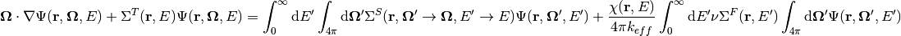
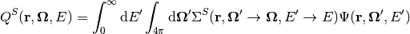
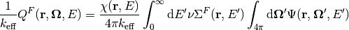
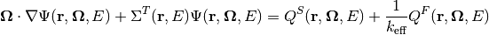
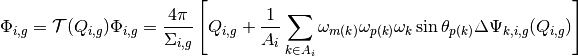
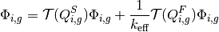
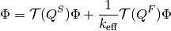
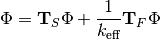
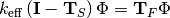
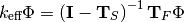

8. Krylov Subspace Methods¶
The MOC equations are traditionally solved using a non-linear power iteration method. This is not the only way to solve MOC, but many of the alternatives require the equations to be rewritten in a linear fashion. To convert into a linear operator form, we need to essentially repeat the derivation shown in Section 2, with a slight modification. Starting with the Boltzmann transport equation:

Instead of replacing the right hand side with  , we replace it with a fission and a scatter source. The idea is to factor out the eigenvalue. The resulting source terms are:
, we replace it with a fission and a scatter source. The idea is to factor out the eigenvalue. The resulting source terms are:
Scatter Source

Fission Source

Similar to before, the transport equation can be more concisely written as:

From here, we follow the exact same process all the way to the end. The MOC sweep operator  (explicitly for a vacuum boundary condition, as non-vacuum conditions add another non-linearity) is given by the following equation:
(explicitly for a vacuum boundary condition, as non-vacuum conditions add another non-linearity) is given by the following equation:

Since this is the linear Boltzmann transport equation, we can separate the sources (as was done earlier), solve for them separately, and add the results back together. Each source will generate its own angular fluxes as well.

One can now view the above equation in the light of linear algebra, as each of these new operators no longer have any dependence on the eigenvalue, and are themselves linear with respect to the flux. They can now be treated as linear operators and manipulated.




As each term here is not defined as a matrix, but as a linear operator, any algorithm that operates on it must necessarily only use operator-vector products. Krylov subspace algorithms, such as the generalized minimal residual method (GMRES) for the inversion, and implicitly restarted Arnoldi iteration (IRAM) for the eigenvalue problem itself, are ideal. IRAM also gives the added benefit of being able to calculate multiple eigenmodes of the problem, which can be used in stability analysis and dominance ratio calculations.